Writeup JerseyCTF II
Table of Contents
Cryptography
Salad
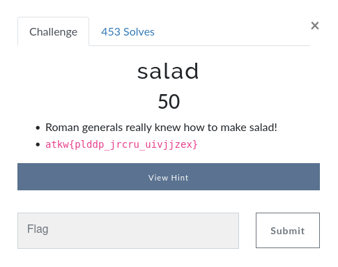
What is the type of salad they are referring to? Well, the only thing that I could think of was Caesar Salad. And the most basic type of encryption is the Caesar Cipher.
With an only Ceasar Cipher decoder, I found the answer:
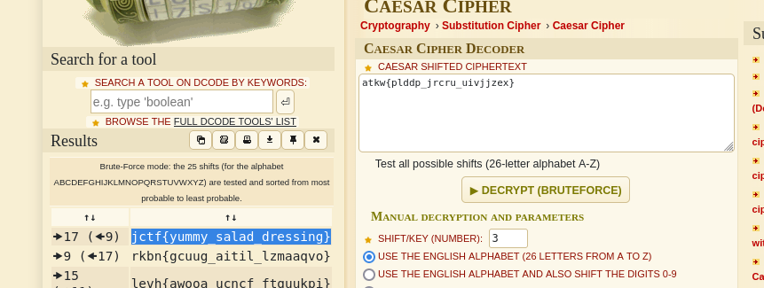
jctf{yummy _ salad _ dressing}
new-algorithm
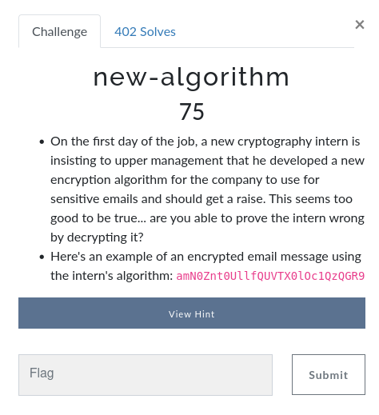
The text seems a bit weird, but from the looks, it seamed more like an encoding
and not that much like anything else. So I tried base64 decoding and got the flag.
amN0Znt0UllfQUVTX0lOc1QzQGR9
echo 'amN0Znt0UllfQUVTX0lOc1QzQGR9' | base64 -d
jctf{tRY _ AES _ INsT3@d}
Secret Message
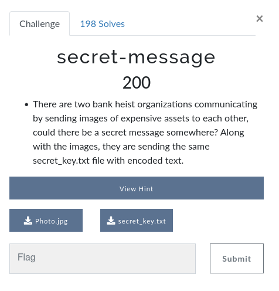
They give you an image:
And a message that looked the following way:
WWxoc3B6YXBqaHNzZiwgZnZiIGR2dSdhIHpsbCBhb3B6IHB1IHlsaHMtZHZ5c2sganlmd2F2bnlod29mLiBEbCd5bCBqdnNzbG5sIHphYmtsdWF6IG9oY3B1biBoIG52dmsgYXB0bCwgenYgcmxsdyBudnB1biBwbSBmdmIgZGh1YSBhb2wgbXNobiEgQW9sIHdoenp3b3loemwgcHogdGh1am9semFseV9idXBhbGtfMjAyMg%3D%3D
The message looked like it could be base64, so I decided to try and decode it:
echo 'WWxoc3B6YXBqaHNzZiwgZnZiIGR2dSdhIHpsbCBhb3B6IHB1IHlsaHMtZHZ5c2sganlmd2F2bnlod29mLiBEbCd5bCBqdnNzbG5sIHphYmtsdWF6IG9oY3B1biBoIG52dmsgYXB0bCwgenYgcmxsdyBudnB1biBwbSBmdmIgZGh1YSBhb2wgbXNobiEgQW9sIHdoenp3b3loemwgcHogdGh1am9semFseV9idXBhbGtfMjAyMg%3D%3D' | base64 -d
Ylhspzapjhssf, fvb dvu'a zll aopz pu ylhs-dvysk jyfwavnyhwof. Dl'yl jvsslnl zabkluaz ohcpun h nvvk aptl, zv rllw nvpun pm fvb dhua aol mshn! Aol whzzwoyhzl pz thujolzaly _ bupalk _ 2022 ÃÜ
What came out, looked like it could be a Caesar cipher so again I used the online decoder:
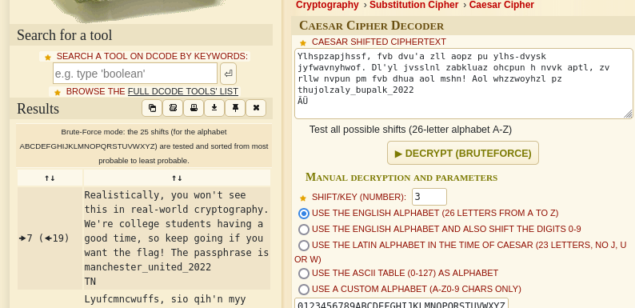
With that in mind, I used the tool steghide to get the secret message out of the image:
steghide extract -sf Photo.jpg -xf flag.txt
Finally, we get a motivational message and the flag:
Amazing you were able to crack the code. Flag: jctf{QbxVLJrIbP}
Web
apache-logs
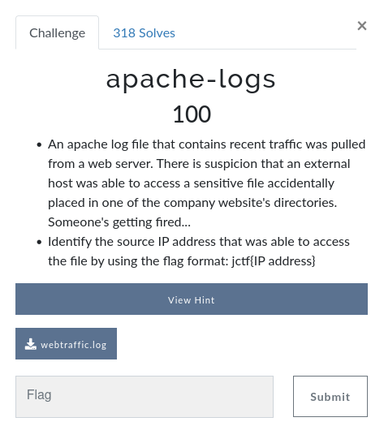
They give you a file with a lot of log lines. I did not want to search for the exact line so I used grep:
cat webtraffic.log | grep jctf
This gives us some fake flags: jctf{14.123.31.1}, jctf{n0tth3fl@g}.
But if you look at the logs, some of them are happening at /tmp. So with that in mind
you can check all of the people that are checking /tmp and you find an IP checking
a file called bankrecords.pdf. And with that you find the flag: jctf{76.190.52.148}
Seigwards-secrets
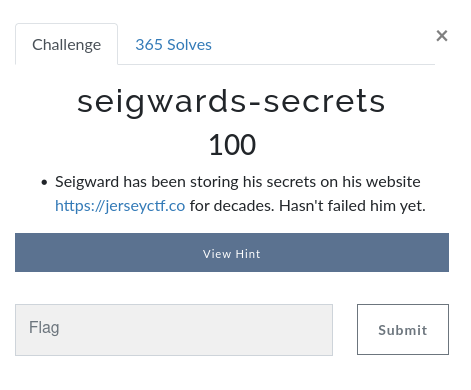
The website looks as follows:
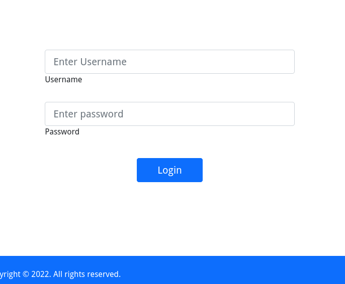
We can view the source code of the page:
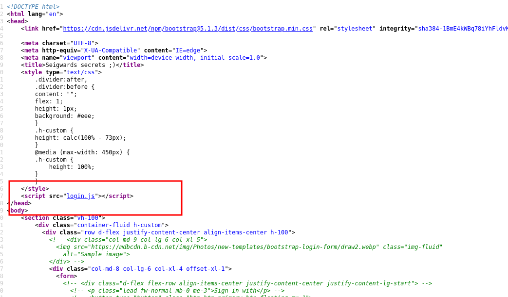
And the login.js file looks suspicious, so when viewing that file we find the following:
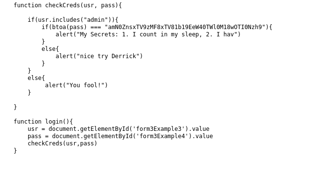
The name of the user is admin and the password, seems hardcoded it's the gibberish that
looks like base64.
Decoding this secret pass we find the flag:
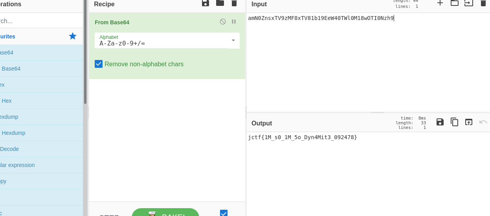
jctf{1M _ s0 _ 1M _ 5o _ Dyn4Mit3 _ 092478}
heres-my-password
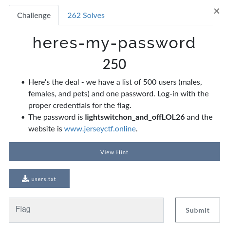
The webpage looked as follows:
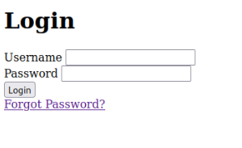
On wrong login:
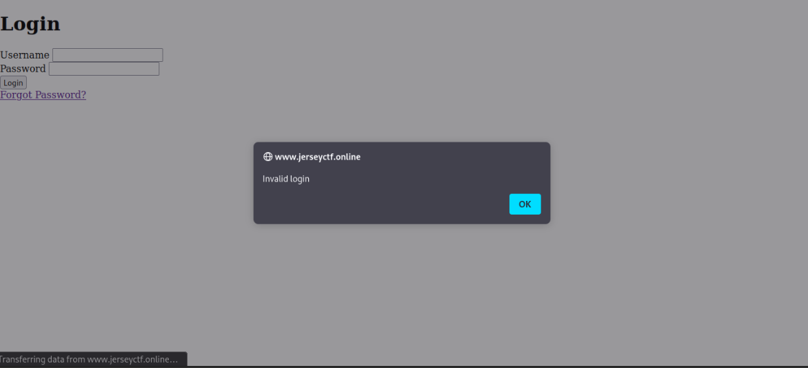
The list has 500 users and our password is lightswitchon _ and _ offLOL26. I really did not know how to do this problem besides bruteforcing by hand, but after some web surffing I found the concept of Credential Stuffing: The practice of using one password for multiple users.
There is a tool that actually solves this problem, and it is called hydra, with it you can give it
a dictionary of users and a password and it tells you on wich one it worked.
But before I could do that, you had to knew the way the form was submitted, so I used burpsuite, to understand the query:
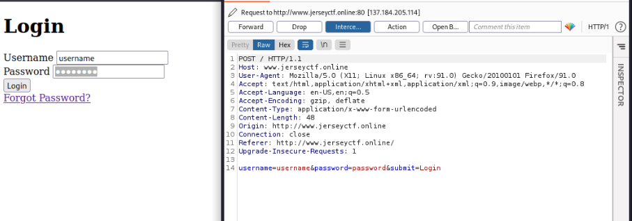
And with that I used the following command:
hydra -L users.txt -p lightswitchon_and_offLOL26 www.jerseyctf.online http-post-form "/index.php:username=^USER^&password=lightswitchon_and_offLOL26&submit=Login:Invalid login"
We get the user: Wolverine. And we can get the flag frome here:
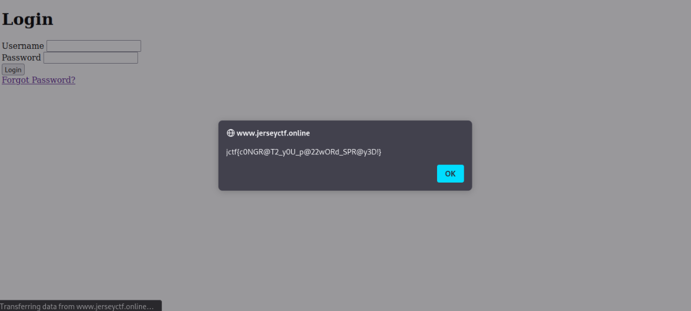
OSINT
dns-joke
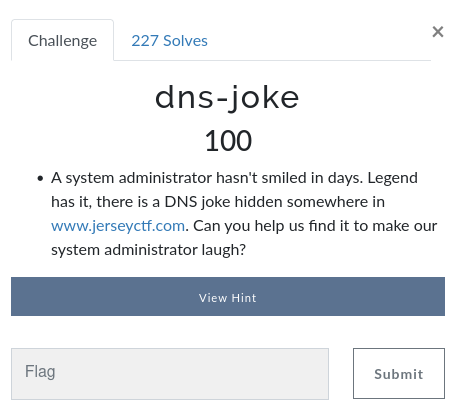
I searched online for a dns checker and sure I found the flag at the following ling in the TXT section: https://dnschecker.org/all-dns-records-of-domain.php?query=www.jerseyctf.com&rtype=ALL&dns=cloudflare
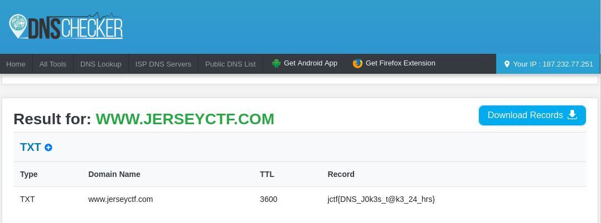
MISC
we-will
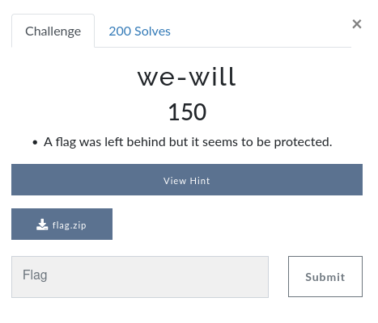
I thought about the song We Will Rock You, and the file of passwords with the same name. So with that in mind I decided to give it a try with john and the wordlist rockyou.txt.
zip2john flag.zip > hash.txt
john -wordlist=/usr/share/wordlists/rockyou.txt hashes.txt
That gave us the password of the zip: *@@!^^$253jersey
Unziping the file we get the flag: jctf{y0u _ r0ck3d _ 17}
bank-clients
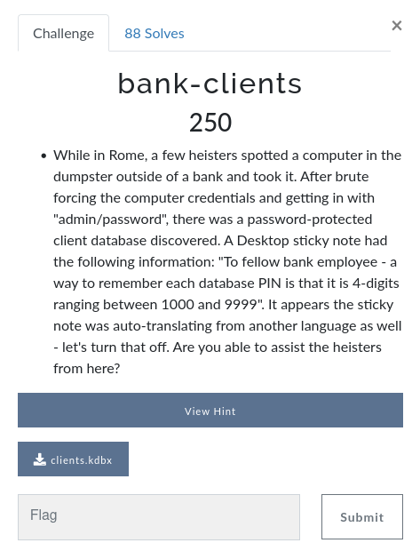
With this problem they gave you a hint too:
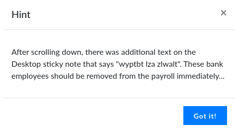
It was a simple caesar cypher and the original language of the hint was latin, so I had to translate it, the hint was the following: The first one is seven.
With this in mind, I to wanted to apply bruteforce like in the we-will problem, but this time I created a quick and dirty python script to generate my wordlist:
for i in range(7000, 8000): print(i)
And redirectioning it to another file as follows:
python numbers.py > numbers.txt
Finally, I used john to generate the hash of the keepass database and later on crack it:
keepass2john clients.kdbx > hash.txt
john --wordlist=./numbers.txt hash.txt
And finally we get the password for the database 7182 to open it we use the keepassx and we get the flag.
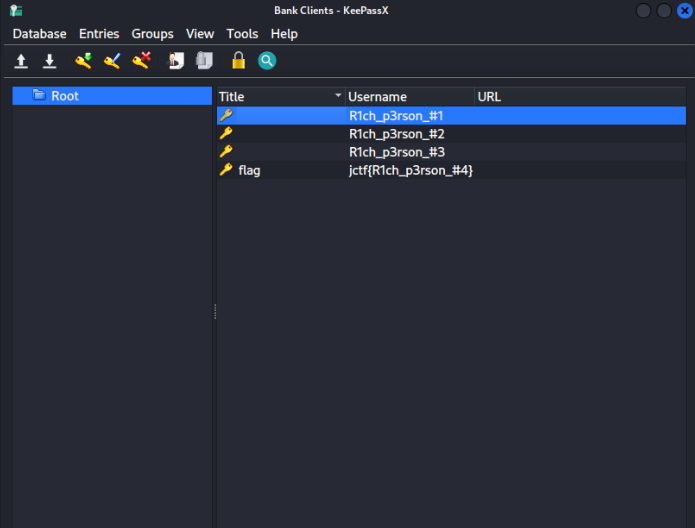
Forensics
Speedy-at-midi
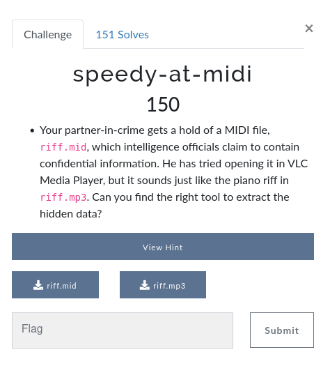
The audio: ./assets/riff.mp3
I was clueless, so I read the hint:
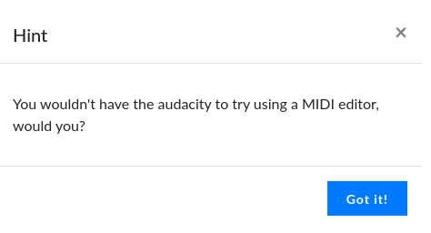
And realized that I could use the popular tool audacity to open both of the files (I did not know that audacity had a midi editor). And opening the riff.mid file and making a little zoom we find the flag written as notes:
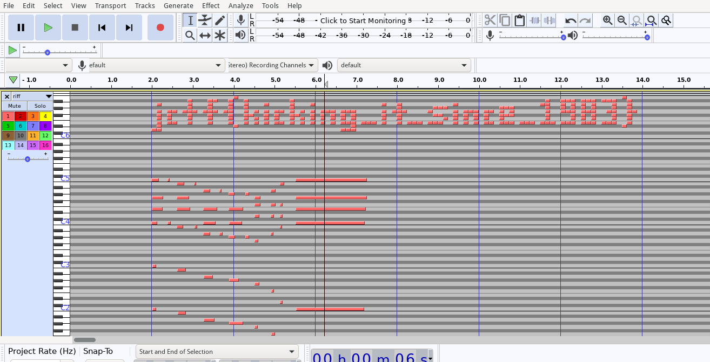